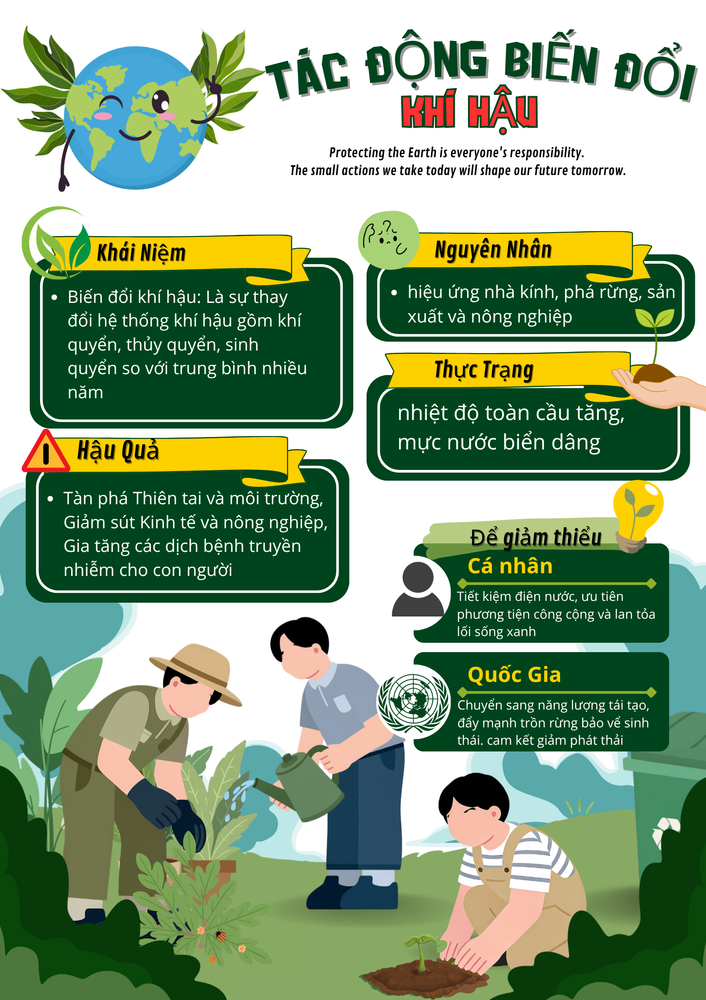
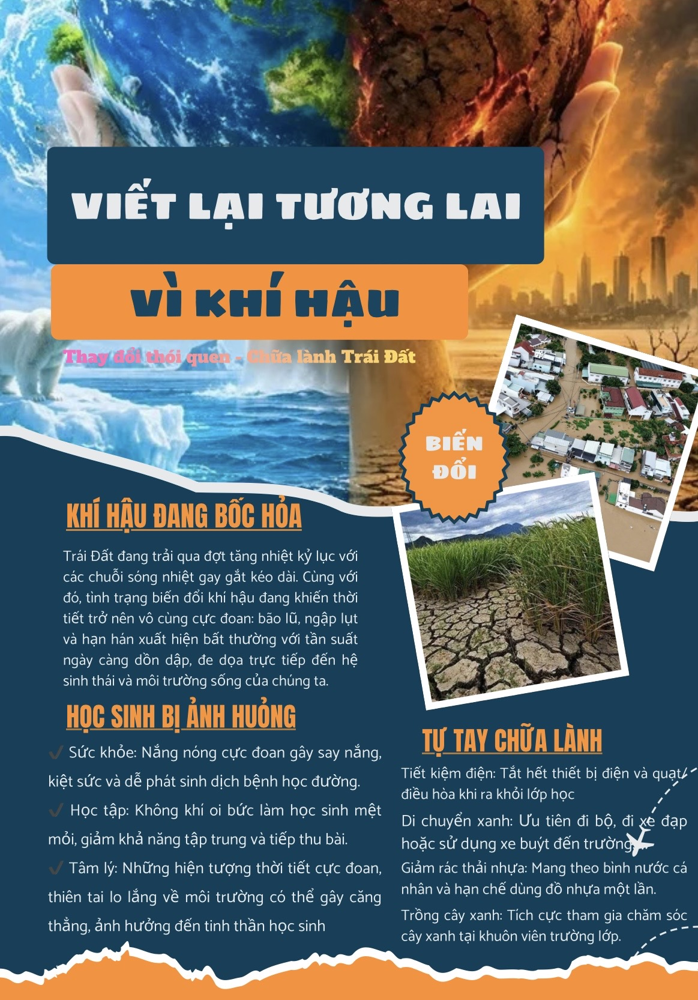
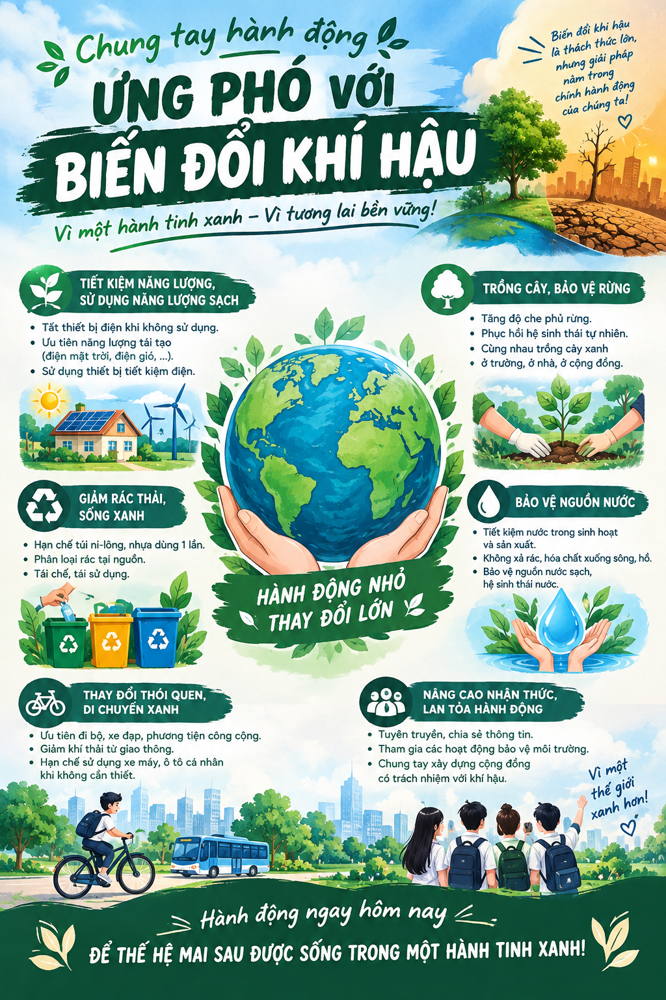
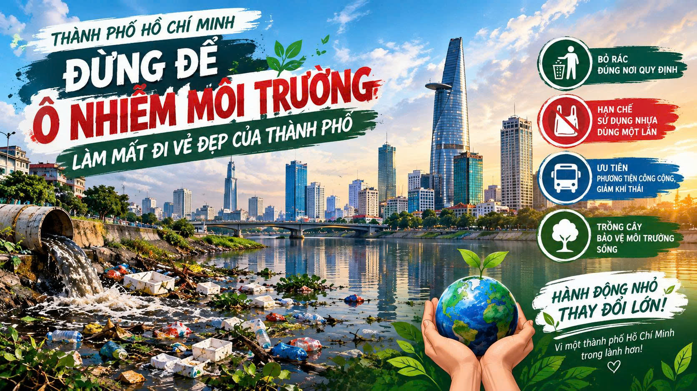
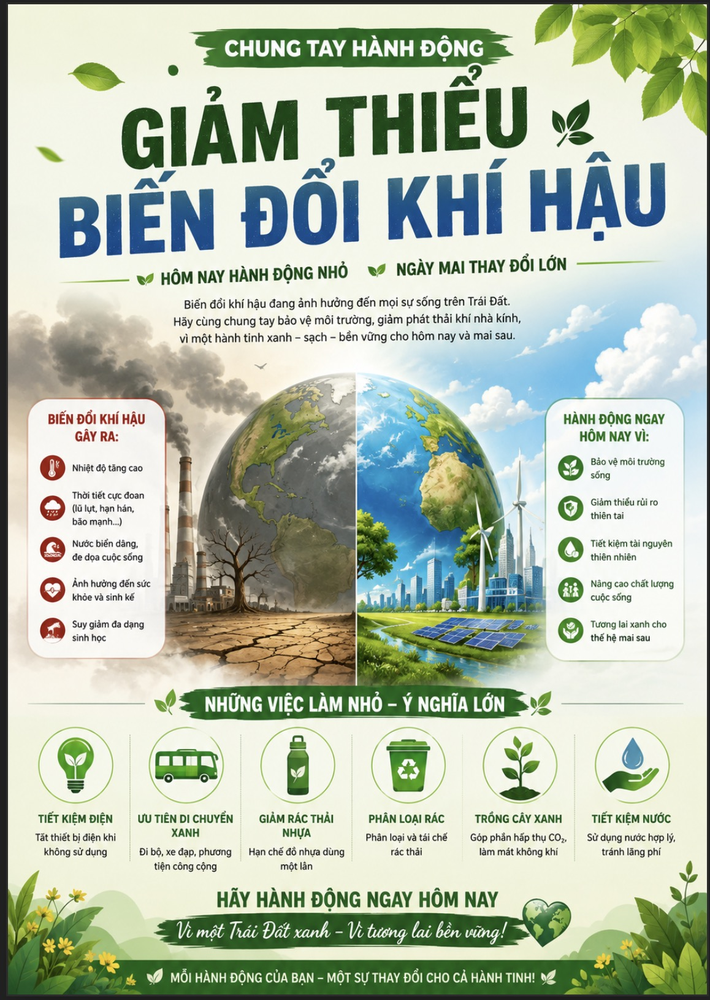
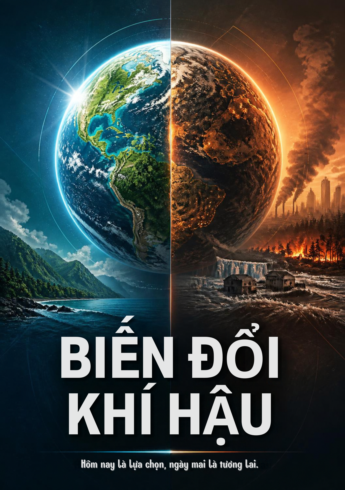
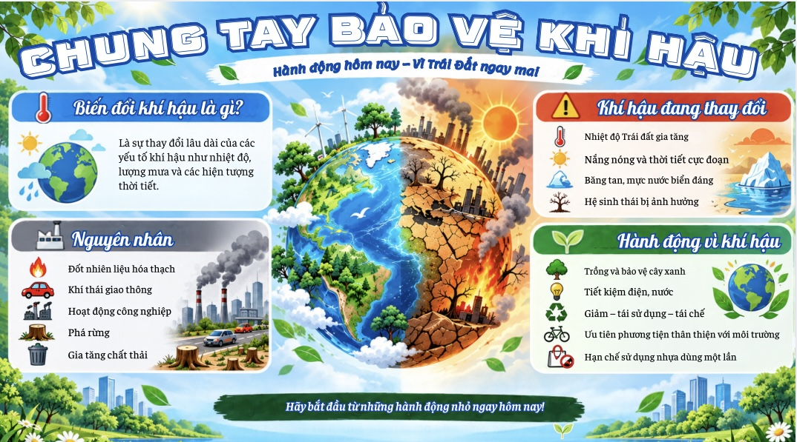
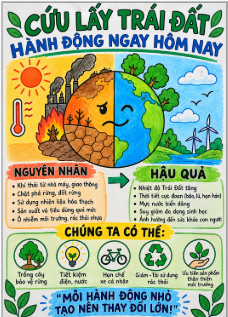

🖼️ POSTER ĐỒ HỌA
Trái Đất - Ngôi Nhà Chung
Chủ đề: Bảo tồn thiên nhiên
Hình ảnh bàn tay nâng niu Trái Đất xanh tươi, kêu gọi mọi người trân trọng thiên nhiên.

Hình ảnh bàn tay nâng niu Trái Đất xanh tươi, kêu gọi mọi người trân trọng thiên nhiên.

Màu sắc tương phản mạnh mẽ thể hiện sự đối lập giữa khói bụi ô nhiễm và màu xanh hi vọng.

Những việc làm đơn giản mỗi ngày như tắt vòi nước khi đánh răng, phân loại rác hữu cơ.

Hình ảnh những cánh quạt điện gió vươn cao trên nền trời xanh Ninh Thuận.

Rừng ngập mặn là tấm lá chắn xanh chống sóng dữ và bảo vệ đàn chim nước phương Nam.

Khuyên chúng mình tái sử dụng túi vải, hộp cơm và không mua sắm lãng phí đồ nhựa.

Cùng nhau trồng thêm cây bóng mát trước sân trường và chăm sóc vườn hoa học đường.

Sơ đồ tư duy sinh động giúp ôn tập kiến thức Địa lý và rèn luyện ý thức sống xanh.
"Mỗi bức tranh cổ động không chỉ là một bài tập dự án môn học, mà còn là tâm tư của chúng em gửi tới các bạn học sinh và cộng đồng. Nét vẽ có thể còn mộc mạc, nhưng chúng em mong muốn rằng khi nhìn vào những bức tranh này, mỗi người sẽ cùng dừng lại một phút để trân trọng bầu không khí trong lành, dòng sông sạch mát và màu xanh của đất nước mình."
Cổng thông tin "Màu Xanh Tương Lai" kết nối chặt chẽ giữa tranh cổ động học đường, mô phỏng 3D khoa học, thực tế khí hậu TP.HCM và cẩm nang sống xanh.
Trực tiếp điều chỉnh lượng mưa, đảo nhiệt đô thị, triều cường bão lũ và băng tan để quan sát cơ chế thiên tai tại TP.HCM, Nam Bộ và Vùng Cực.
Cẩm nang hành động thực tiễn cho học đường, gia đình và cộng đồng: tiết kiệm điện, giảm rác nhựa và thử thách 7 ngày xanh.
Khảo sát các biểu hiện thời sự sát sườn tại TP.HCM: đỉnh triều cường lịch sử 1,87m, ranh mặn 4‰ sông Sài Gòn và đảo nhiệt đô thị.
Tổng quan 4 phân khu chuyên đề, phim ngắn thông điệp xanh và định hướng giáo dục khí hậu cộng đồng phi lợi nhuận.